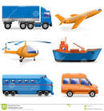

<mat-sidenav-container fullscreen>
    <mat-sidenav #start>
        <mat-nav-list (click)="start.close()">            
            <a mat-list-item routerLink="/serachLocation/search">
                <mat-icon>location_searching</mat-icon>
                <span>Search Location</span>
            </a>           
        </mat-nav-list>
        <mat-nav-list (click)="start.close()">            
                <a mat-list-item routerLink="/createLocation/create">
                    <mat-icon>create</mat-icon>
                    <span>Create New Location</span>
                </a>           
            </mat-nav-list>        
    </mat-sidenav>
    <mat-toolbar color="primary">
        <button class="menu-button" mat-icon-button (click)="start.open('mouse')">
            <mat-icon>menu</mat-icon>
        </button>
    </mat-toolbar>
    <router-outlet></router-outlet>
</mat-sidenav-container>
